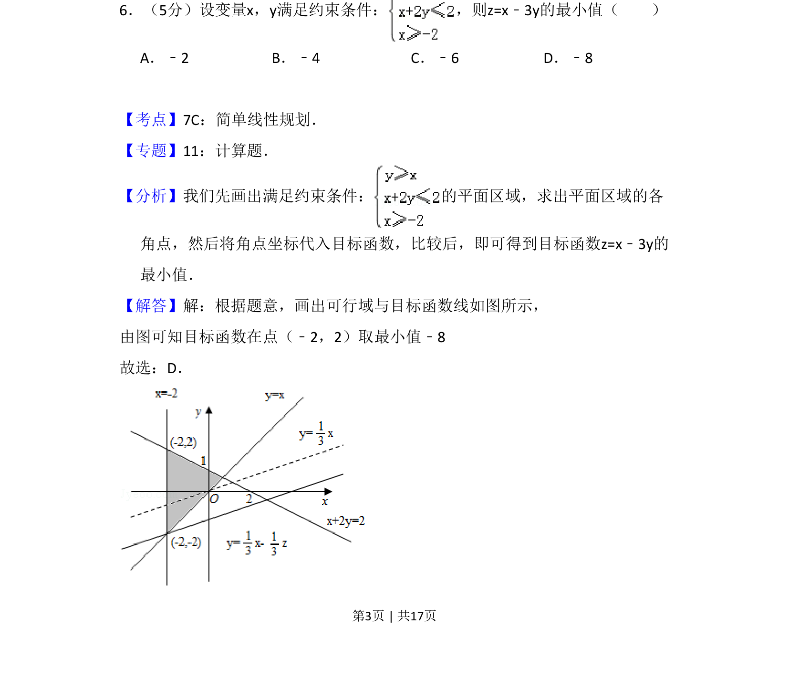
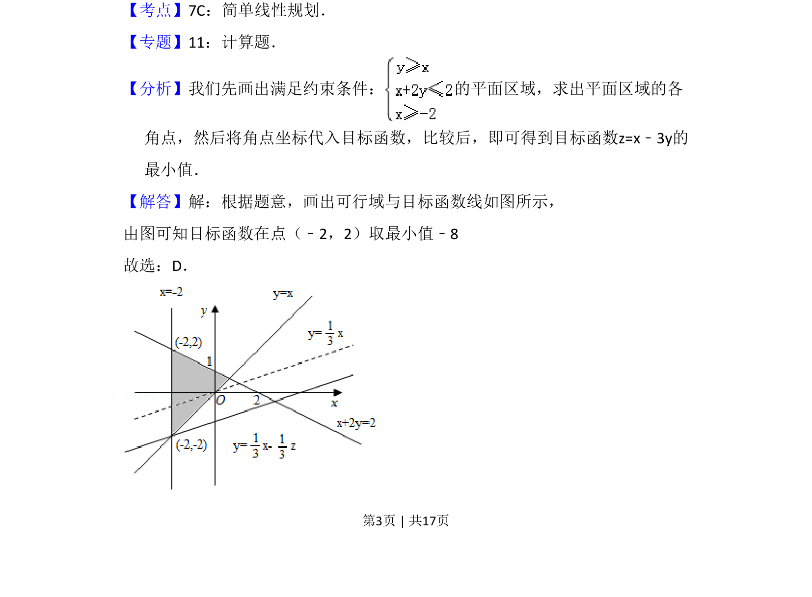
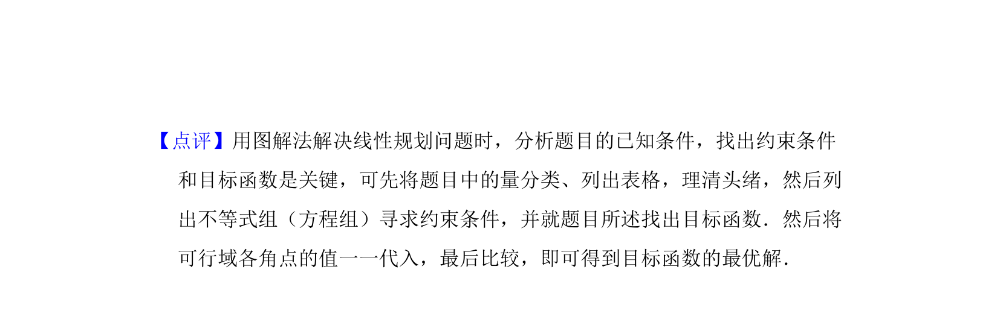

考点：不等式 线性规划

在两个不等式约束条件(x+2y≤2, x≥-2)下求 z=x-3y 的最小值，用图解法找可行域顶点。


📄 原 PDF 第 3 页：
素材/真题/吉林/2008-2024·（吉林）数学高考真题/2008年高考数学试卷（文）（全国卷Ⅱ）（解析卷）.pdf
6．（5分）设变量x，y满足约束条件： ，则z=x﹣3y的最小值（ ） A．﹣2 B．﹣4 C．﹣6 D．﹣8
【考点】7C：简单线性规划．菁优网版权所有 【专题】11：计算题． 【分析】我们先画出满足约束条件： 的平面区域，求出平面区域的各 角点，然后将角点坐标代入目标函数，比较后，即可得到目标函数z=x﹣3y的 最小值． 【解答】解：根据题意，画出可行域与目标函数线如图所示， 由图可知目标函数在点（﹣2，2）取最小值﹣8 故选：D．